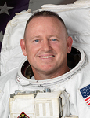

Lyndon B. Johnson Space Center
Houston, Texas 77058
|
National Aeronautics and Space Administration Lyndon B. Johnson Space Center Houston, Texas 77058 |
 |
Biographical Data |
||
Barry E. “Butch” Wilmore (Captain, U.S. NAVY)
NASA Astronaut
PERSONAL DATA: He is married to the former Miss Deanna Newport of Helenwood, Tennessee and they have two daughters. He was raised in Mt. Juliet, Tennessee where his parents Eugene and Faye Wilmore still reside. His brother Jack and family reside in Franklin, Tennessee.
EDUCATION: Bachelor of Science and Master of Science in Electrical Engineering, Tennessee Technological University. Master of Science in Aviation Systems, University of Tennessee. Mount Juliet High School, Mount Juliet, Tennesee.
SPECIAL HONORS: Navy Meritorious Service Medal, five Air Medals, three with Combat 'V' designation. Six Navy Commendation Medal, three of which also hold the Combat 'V' designation. Two Navy Achievement Medal and numerous unit decorations. Aviation Officer Candidate School (AOCS) “Distinguished Naval Graduate.” Initial Naval Flight Training “Commodores List with Distinction.” United States Atlantic Fleet “Light Attack Wing One - Pilot of the Year” (1991). U.S. Atlantic Fleet "Strike Fighter Aviator of the Year" (1999). Recipient of the Strike Fighter Wing Atlantic “Scott Speicher Award” for Weapons Employment Excellence (1998). Tennessee Technological University “Sports Hall of Fame” Inductee for football (2003). Tennessee Technological University Outstanding Alumus and Engineer of Distinction (2010). Honorary Doctorate, Tennessee Technological University (2012).
EXPERIENCE: Wilmore has accumulated more than 6800 flight hours and 663 carrier landings, all in tactical jet aircraft, and is a graduate of the United States Naval Test Pilot School (USNTPS).
During his tenure as a fleet Naval officer and pilot, Wilmore completed four operational deployments, flying the A-7E and FA 18 aircraft from the decks of the USS Forrestal, USS Kennedy, USS Enterprise and the USS Eisenhower aircraft carriers. He has flown missions in support of Operations Desert Storm, Desert Shield and Southern Watch over the skies of Iraq, as well as missions over Bosnia in support of United States and NATO interests. Wilmore successfully completed 21 combat missions during Operation Desert Storm while operating from the flight deck of the USS Kennedy. His most recent operational deployment was aboard the USS Eisenhower with the "Blue Blasters" of Strike Fighter Squadron 34 (VFA-34), an F/A-18 squadron based at Naval Air Station Oceana, Virginia.
As a Navy test pilot, Wilmore participated in all aspects of the initial development of the T-45 jet trainer to include initial carrier landing certification and high angle of attack flight tests. His test tour also included a stint at USNTPS as a systems and fixed wing Flight Test Instructor. Prior to his selection to NASA, Wilmore was on exchange to the United States Air Force as a Flight Test Instructor at the Air Force Test Pilot School at Edwards Air Force Base, California.
NASA EXPERIENCE: Selected as an astronaut by NASA in July 2000, Wilmore reported for training in August 2000. Following the completion of two years of training and evaluation, he was assigned technical duties representing the Astronaut Office on all propulsion systems issues including the space shuttle main engines, solid rocket motor, external tank, and also led the astronaut support team that traveled to NASA’s Kennedy Space Center, Florida, in support of launch and landing operations. He completed his first flight as pilot on STS-129 and has logged more than 259 hours in space.
SPACE FLIGHT EXPERIENCE: STS-129 (November 16 - 29, 2009) was the 31st shuttle flight to the International Space Station. During the mission, the crew delivered two Express Logistics Carrier (ELC racks) and about 30,000 pounds of replacement parts to maintain the station’s proper orientation in space. The mission also featured three spacewalks. The STS-129 mission was completed in 10 days, 19 hours, 16 minutes and 13 seconds, traveling 4.5 million miles in 171 orbits, and returned to Earth bringing back with them NASA astronaut, Nicole Stott, following her tour of duty aboard the station.
On September 25, 2014, Wilmore and cosmonauts Elena Serova and Alexander Samokutyaevlaunched to the International Space Station in a Soyuz spacecraft from the Baikonur Cosmodrome in Kazakhstan. Wilmore is scheduled to assume command of the station in November 2014. On March 12, 2015 the Expedition 42 crew safely touched down in Dzhezkazgan, Kazakhstan after a 167 day mission aboard the International Space Station. Wilmore performed three spacewalks to prepare for new international docking adapters and future U.S. commercial crew spacecraft. In addition, he completed a spacewalk with fellow astronaut Reid Wiseman to replace a failed voltage regulator. Wilmore now has logged 178 days in space during two missions, the first of which was on space shuttle mission STS-129 in 2009. Wilmore now has spent 25 hours and 36 minutes in space during his four excursions.
APRIL 2015